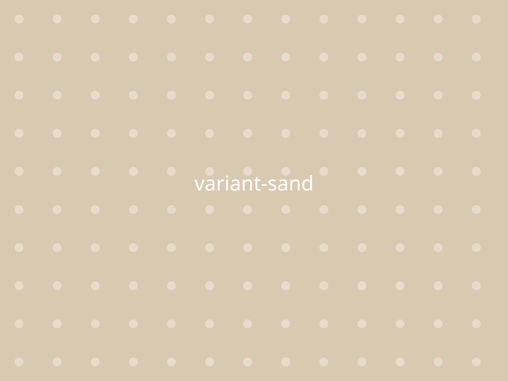
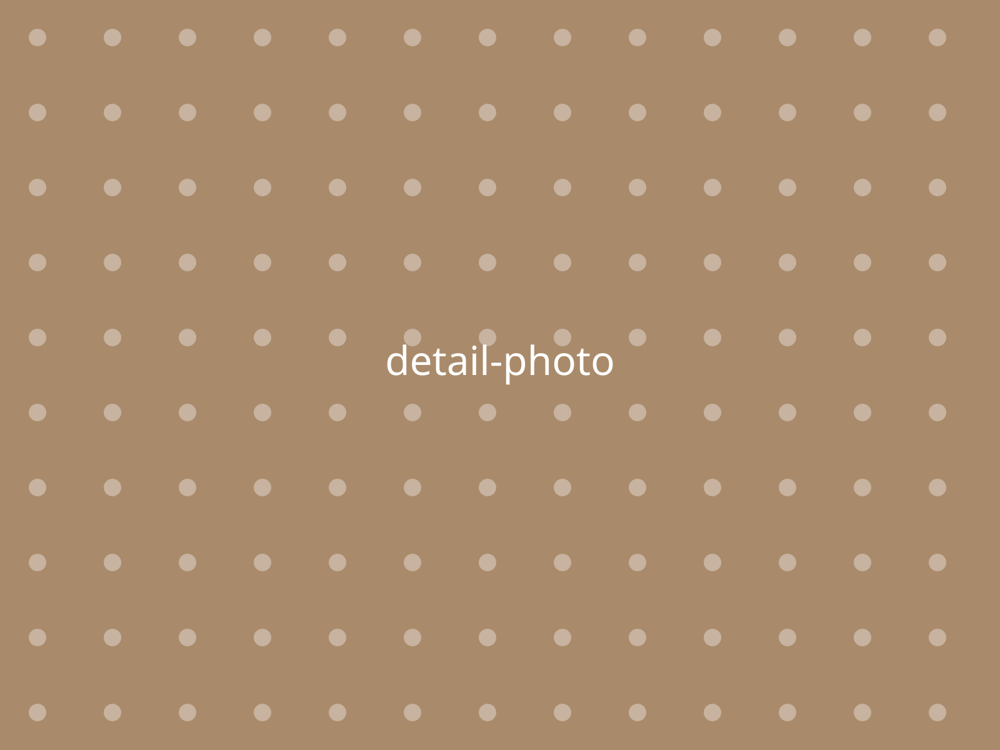

Paste a messy list. Get a plan.
This is the real sorting logic running in your browser. Watch it, or type your own task.
Pick a color
Every color is photographed from the same spot in the same light, so what you see is what arrives.

Hand-stitched, eleven stitches per inch
